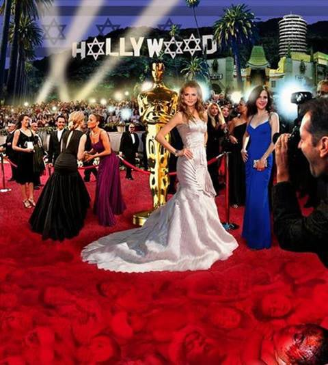
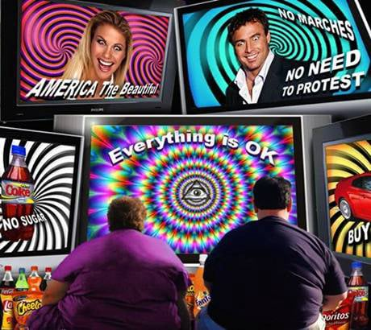
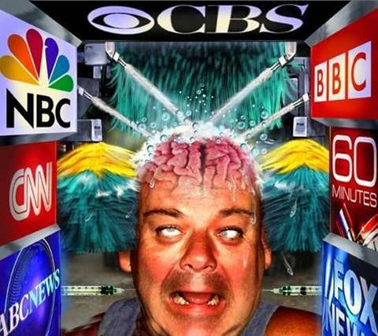
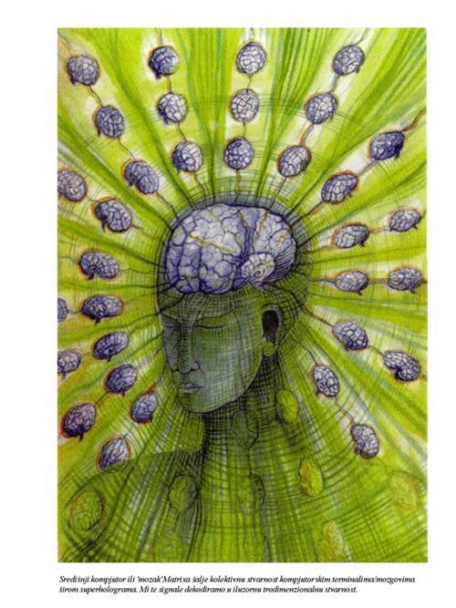
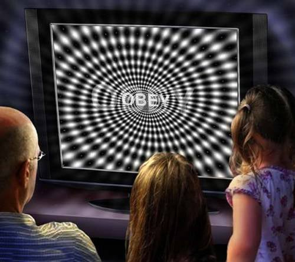

Cela umetnost i kreacija novog svetskog poretka je Holivud i njihovi filmovi.Tako je sad cela ta njihova umetnost,filmovi i muzika puštena besplatno na internet.Cilj im je da to bude dostupno svima da se što više zaluđujete.Svi ti filmovi su puni nasilja i sublimiranih poruka a ni muzika nije bolja(o ovome će biti posebno).Ovi filmovi imaju više ciljeva,da vas pretrpaju pogrešnim informacijama,da vam aktiviraju negativnu karmu koju ćete onda morati proživeti i u praksi,da im dajete životnu energiju,da se poistovećujete sa raznim glumcima(koji su inače skoro svi njihovi krvni rođaci-pa im onda kao dele nagrade,ustvari dele rođacima,ista priča je i sa bankama i svim ostalim stvarima,nobelovim nagradama i sličnim nebulozama),da vas pretrpaju količinom informacija (jer čovek je vrlo ograničen u 3d sa slobodnim prostorom,tako da kada vas pretrpaju nemate mesta da se posvetite sebi i duhovnom napretku,a još postajete i zavisnik od svega toga).Filmovi su tu i da vam stvaraju iluziju kako treba živeti i šta su “prave vrednosti” u životu(jer filmovi vam daju model kako treba živeti a ako to ne uspete vi ste “bolesni” praktično-možete čak doći i na ideju da se ubijete jer ste promašili život ili film ne znam više kako da nazovem ovo ludilo).Mnogi i kada imaju te psihičke probleme to je obično znak početka izlaska iz sistema što je obično bolno,ali i za to "oni" imaju rešenje u vidu "velikih stručnjaka" psihologa i psihijatara koji vas pomoću lekova vrlo brzo vraćaju u sistem i programirano ponašanje odnosno zombiranje i pokušavaju da vas nateraju da istrajete do kraja na pogrešnom putu.Ove reakcije inače mogu da se javljaju i od raznih vrsta psihotronskih oružja koja se svakodnevno koriste uglavno vrlo niskih frekvencija koje izazivaju sve od depresije pa do umetanja samoubilačkih i misli na koji način treba da umrete i to da bude što pre(ovo ubacivanje misli se radi uglavnom noću kada ste najmanje zaštićeni,a ako kojim slučajem izbegavate spavanje noću znajte da nije slučajno).Tako da zapravo nikada ne znate o čemu se tačno radi.U svetu velikog brata u kome živimo omiljena stvar velikog brata je i zamena teza i filmovi i mediji služe i za prikazivanje loših stvari kao dobrih i dobrih kao loših ili na što nakaradniji način i sa ismevanjem.Inače postoji takva tehnologija kojom mogu svaki dan da vas gledaju u stanu šta radite a od kada su ljudima dali mobilne sada imaju i ton.U svetu velikog brata uvek se forsiraju na tv-u oni najgluplji i najgori u svim oblastima i oni treba da vam budu idoli.Isto važi i za vaše omiljenje političare.


Inače čim primete da opada gledanost filmova i tv ,odmah puštaju nove tehnologije tako je prvi put kada su to zapazili puštena digitalna slika,pa hd,pa full hd,pa sad ide 3d i još hologramska tv.Pa pošto se vreme ubrzava a i ljudi se bude sve više,prosto ne mogu da postignu.Bitno im je da stalno kupujete te nove stvari i tako da vas drže da i dalje gledate,usput i bacate pare a možete i da se hvalite okolo šta ste sve kupili i kako ste “napredovali”,a oni se lepo smeju i komentarišu –baš je lepa ova planeta majmuna.Sada su krenuli i presing igru sa rijaliti emisijama ima ih 20ak,vrlo se trude,a u planu je i još novih,s tim da to sada nisu samo klasične rijaliti emisije nego se dovode glumci amateri i glume razne uloge tako da vas prave budalom i dok to gledate jer je sve izmišljeno i naravno poverovaćete u LAŽ o čemu sam već pisao koliko je to bitno za njih.Sada je kod nas uveden neki novi zakon gde pre početka tih emisija lepo piše "igrani program" ali ne vredi većina se i dalje zaluđuje,i još navijaju i šalju poruke(ma opšte ludilo).

Njihove tv vesti su svugde i to im je pravo ispiranje mozga,kontolišu skoro sve tv stanice tako da su tu skoro nedodirljivi.
Ipak svugde ima istine pa čak i u tim filmovima, samo uvek treba da znate koji deo je tačan. Recimo filmovi Matrix naročito prvi deo je skoro potpuno tačan i najistinitiji film ikad prikazan. Upravo to je realnost sveta u kome živite.Sve je matrica.Šta se ustvari dešava,sada će mnogi odmahivati sa nevericom kada budu ovo čitali kao onaj Neo u filmovima Matrix ali ovo što ću sada napisati je i naučno dokazano i priča se već u naučnim krugovima ali ne može još da se objavi,zapravo mi smo samo deo programa matrice koja se nalazi svugde oko nas “jednog savršenog kompijutera”,nešto kao čvrst hologram.Sve se projektuje iz sazvežđa Orion gde žive ovi negativni i preko matrice i naše dnk(koja predstavlja savršeni kristal) vam se prikazuje realnost koje zapravo nema.Sve je čista iluzija!

Sada se opet pojavilo veliko oduševljenje sa filmom Avatar.Vidim tehnički su ga i uopšte dobro uradili da bi na vas ostavili što jači utisak da dobro upamtite u podsvesti da su takvi vanzemaljci ustvari pozitivni a ljudi negativni,to je poenta celoga filma.Jer jednoga dana kada se pojave na zemlji da vi već znate to.Inače su ih po fizičkom izgledu sasvim realno prikazali ali ćud im je potpuno drugačija(misli se na one negativne).Oni uopšte nemaju nikakvih mogućnosti za duhovni napredak. Potpuno su inferiorni u odnosu na ljude i zato samo znaju da kradu energiju i informacije od ljudi na putu evolucije.Čim ljudi preskoče evolutivni prag u bliskoj budućnosti(što podrazumeva veće očitavanje dnk lanca nego do sada),postaće toliko moćni u odnosu na sadašnje vladare sveta (biće nešto kao na kraju prvog dela filma matrix) tako da oni brzo žure da izvrše masovnu depopulaciju stanovništva(što kroz gmo hranu, zaprašivanjem iz vazduha opasnim materijama, vodom i naravno čipovanjem i na sve moguće načine a ima ih još mnogo) da bi kako oni zamišljaju olakšali borbu svojim nadređenima (negativnim vanzemaljcima) protiv ljudi u budućnosti.Što se filma Avatar tiče čudi me samo da neki koji misle da znaju nešto o ovim stvarima ništa nisu shvatili nego se oduševljavaju filmom.Malo je onih koji ozbiljnije kapiraju stvari.
Postoje filmovi koji nisu loši jer prikazuju dosta istine.Preporučio bi vam Ruski film možete ga naći pod nazivom"The Inhabited Island" da vidite kako se živi u velikom bratu.Ukratko radnja je smeštena u budućnost oko 150 godina od sada,ljudi su prevazišli bolesti,ratove i sve probleme na zemlji i turistički putuju i uživaju u svemiru.Onda se letilica pokvari i sleću na planetu gde zatiču život sličan našem današnjem.Odličan film nešto kao parodija na svet velikog brata.Preporučio bi vam i igranu seriju pod nazivom V ili Visitors(Posetioci) ljudima koji su već malo upućeni u ove stvari oko vanzemaljaca.Ukratko radi se o tome kako negativni vanzemaljci u ljudskom obliku stižu na zemlju,iako svoje infiltrirane predstavnike imaju već među ljudima.Jako je zanimljivo videti njihove međusobne odnose kao i one prema ljudima u svim mogućim kombinacijama.Posle ovoga možda će vam se pojasniti neke stvari oko događaja na zemlji.Vidi se da je ovo režirao neko jako dobro upućen jer ovo i jeste jedan od mogućih scenarija u bliskoj budućnosti a neke stvari se već i dešavaju naveliko.Inače ovo je jedna od retkih serija koja je dobila i zabranu daljeg snimanja(očigledno previše istine).Možete odgledati i film pod nazivom "In Time" da vidite kako globalisti zamišljaju život u bliskoj budoćnosti.Ovaj film posebno preporučujem onima koji stalno "nemaju vremana",njih sam već spominjao ranije.Nije loše da vidite šta vas otprilike čeka ako nastavite po starom.Preporučujem i seriju "The Tomorrow People" ili ljudi sutrašnjice gde se obrađuje problematika sukoba između starog sistema i ljudi koji su evoluirali sa raznim sposobnostima.Jedna od retkih dobrih serija koja se bavi paralelnim svetovima pod nazivom "Fringe" je svakako za preporuku a posebno obratite pažnju na poslednju sezonu serije gde se zapravo otkriva šta nas čeka uskoro.Poučni filmovi o kretanju kroz vreme pod nazivima "click" i "about time".Film koji ne biste smeli propustuti i verovatno jedinstven koji govori o sudbini i slobodnoj volji pod nazivom "The adjustment bureau",film koji govori šta bi se desilo da vam mozak profunkcioniše sa 100% pod nazivom "lucy".U nabrojanim filmovima i serijama ima dosta istine iako nema uvek apsolutne istine ,imajte to u vidu.
Ono što još vole da rade sa filmovima je da recimo snime jadan 1. deo filma da bude dobar,ali 2.nastavak bezveze,pa tako redom,ili poznati glumci a loš film,ili nepoznati glumci a dobar film.To se radi da bi ste poverovali u laž,jer to je jaka energija koja hrani ove gore,i još vam se pišu negativni poeni itd.To se isto radi i sa glasanjima na izborima.Jako im je bitno da izađete na glasanje mada je sve unapred dogovoreno.Ja sam odavno prestao da verujem u te bajke oko izbora,ali svako ko se bori protiv novog svetskog poretka i njihovih instrukcija šta treba i kako treba da država radi je dobar u ovom trenutku.Mešaju se u baš sve.I planiraju da sve više otežavaju život svima da bi vas spuštali u frekvenciji i tako držali zarobljene u 3d matrici.Zanimljivo je i to da kod nas film matrix nikada nije dobio prevod naslova,koji inače u prevodu znači matrica.Baš me čudi.Mislite da je i to slučajno? Da se Vlasi ne dosete.
Filmovi se spuštaju na sve niži nivo,što znači da će uskoro filmovi biti bez ikakvog sadržaja i uz pomoć dodatnog zombiranja ljudi i novih tehnologija oni se nadaju da ćete vi i dalje to gledati.Ono na čemu su prvo radili da nestane sa scene su komedije.Smeh je muzika duše i rasteruje demonske sile,i zbog toga predstavlja pretnju globalistima.Kada ste zadnji put gledali dobru komediju ali da ste se stvarno smejali? Ili bilo šta smešno na tv-u? Verovatno ne pamtite,davno je to bilo jel tako?,samo loše vesti,ubistva,crne hronike i tako neki filmovi drame,horori.I obavezno na kraju vesti posle onih katastrofalnih informacija vam kažu prijatno veče,a i dok čitaju vesti koje uopšte nisu za smeh,stalno se smeju.Imam utisak kao da uživaju u tome ili provociraju.Što se komedija tiče da završim sa jednim primerom,sećate se mister Bina,mnogima je bio smešan,onda su ga uzeli Amerikanci napravili prvi film koji nije bio tako loš ali se izgubila prvobitna esencija i bila je to ipak stepenica niže.Svaki sledeći film sa njim je bio sve lošiji i ako ste gledali poslednji deo,nema više ničega smešnog.Zapravo toliko je loš da sam i sadržaj zaboravio.E tako se to radi sa svim stvarima.Inače kod nas u Srbiji za vreme vladavine demonokrata sigurno ste primetili sve što je bilo ne samo smešno nego što je imalo bilo kakav normaliji sadržaj je izbačeno iz programa,tako da su ostale samo rijaliti gluposti,njihove vesti,i neke njihove verzije zabavnih emisija ali po sadržaju to je po meni za retardirane pravljeno na najnižem duhovnom nivou.A posle demonokrata su došli čisti satanisti,sve gore od goreg.
Filmovi su puni i sublimiranih poruka koje koriste kako bi vas naterarali recimo da kupujete određene proizvode ili da vam izazovu bolesti stalnim ponavljanjem nekih poruka ili recimo nedavno su bili ovi slučajevi masovnih epileptičnih napada posle ljudi koji su gledali film paranormalna aktivnost.I naravno tu su seks filmovi.Sigurno ste mnogo zahvalni velikom bratu što vam forsirano pušta te filmove na ovaj ili onaj način.Sada se sigurno pitate pa šta je tu loše,pa to je Bog stvorio i td.Mnogi će se sada razočarati ali to je tako, u velikom bratu se forsiraju masovno samo loše stvari.Seks je zapravo niži nivo svesti i više je karakterističan za životinje i ljude na nižem stepenu evolutivnog razvoja,plus vas drži u niskim vibracijama.Zar stvarno mislite da je Tesla bio lud po tom pitanju? Ne ,nije i sve zvanične priče koje ste čuli da je on kao rekao o tome su bajke.Tesla je bio na višem nivou svesti gde je potreba za tim zanemarljiva.Da sada će neki pomisliti da je onda u raju dosadno.Ne,kada dostignete određeni nivo svesti to vam više i nije potrebno osim za održanje vrste odnosno broja stanovnika na planeti što se naravno često ismeva u raznim filmovima Holivudske produkcije.Filmovi prikazuju raj kao nešto dosadno gde žive pederi a pakao sa golim ženskama.Ova priča je dosta dugačka i mogla bi biti posebna tema pa ću morati da skratim.Seks može ko ima posebna znanja da koristi i pozitivno ali je uglavnom loše kako se radi,a porno filmovi pokušavaju da vas između ostalog spuste na nivo ispod životinjskog i da naprave evolutivnu fiksaciju na tom stadijumu vašeg razvoja,a o sublimiranim porukama i da ne pričam sada,to je pravo ludilo.Seks je prolazna evolutivna faza a ne fiksacija.Ali u 3d svetu to vrlo jako može da vas blokira u daljem razvoju.O raznim umrežavanjima po ovom pitanju i energetkim razmenama i drugo neću govoriti jer je suviše za sada.U crkvu su opet ubacili onu zamenu teza sa pričom o nekom moralu i zabranama što su apsolutne gluposti.To su stvari kroz koje mora da se prođe a ne da vas crkva ili neka sekta veštački ograničava.Svaki ima svoj razvojni evolutivni ciklus,nismo roboti i nismo svi isti.

Muzika slično kao i filmovi može biti dobra i loša s tim da je uvek mnogo veći procenat loše odnosno štetne i opasne.Ono što je i naučno dokazano od strane naročitlo slobodnih naučnika sa istoka da posebno Rok muzika,a posebno Hard Rok izaziva neverovatnu destrukciju ćelija,čak i moždanih ćelija.Slične efekte ima i metal,posebno hevi metal,tehno muzika,i još mnogi drugi pravci u muzici.Da ih ne nabrajam sada sve ,duga je lista ali ove što sam nabrojao su posebno opasne ne samo zbog fizičkog štetnog uticaja i što obično idu sa drogom, nego što ovakva muzika privlači i demonske sile.Pojavljuju se na koncertima ovakve muzike,jer ova muzika kada prodre u dušu,a uglavnom to radi jer ko je sluša,sluša je onako zdušno kako bi rekli,pa se stvaraju odgovarajuće frekvencije i duša prelazi u jedno ranjivo stanje pogodno za demone.U stvari to i nisu koncerti za ljude nego gozba za demone.Onako baš se dobro počaste vašom energijom.A posle dok se oporavite ko zna koliko treba.Muzika kroz svoje razne pravce vam prenosi i razne poruke što one koje svesno možete da registrujete,što sublimirane one koje samo podsvest registruje.Svi su verovatno čuli za Bitlse i njihove poruke koje su se u pojedinim pesmama mogle čuti kada se ploča pušta obrnuto.Šta mislite da je to bilo slučajno? Jasne poruke pa slučajno.To je danas masovna pojava kako kroz muziku,tako i kroz filmove i igrice.Najopasnije su poruke tipa “Djavo je tvoj bog”,”novac je tvoj bog”,”ti brzo umireš” i slično.Podsvest ovo sve prihvata zdravo za gotovo isto kao i da ste svesno čuli i prihvatili u tome je glavni problem.Ali osim ovoga Muzika često nosi i određene frekvencije koje vas direktno izbacuju iz stanja smirenosti duha,tako da ako je slušate po ceo dan,moglo bi svašta da se desi.Muzika odnosno pojedine pesme imaju i neverovatne sadržaje koje svesno registrujete i često prihvatate,i ne samo to nego u sebi pevate i ponavljate tu pesmu po ceo dan.Ovo stvara određenu matricu vremenom po kojoj počinjete da živite.Kod nas i na ex yu prostorima su se često mogle slušati razne popularne pesme koje proturaju sledeće sadržaje “Jedan dan života”,”Da sutra umrem”,”Umreću bez tebe”,”Svet voli pobednike”,”Jedan je život”,i lista bi mogla da bude jako dugačka,a u samoj pesmi tek ima poruka mali milion.S druge strane medalje postoji klasična muzika koja nije popularna i retko se sluša.Obično i kada nađete određene posebno dobre melodije,to se nešto jedva čuje(kao loš je snimak),što bi trebalo da vas navede da ipak bolje odustanete od toga.Ima malo mešanja ovih negativnih čak i kad je u pitanju klasična muzika,jer šta bi mi bez njih.Postoji muzika, pojedine melodije koje stvaraju onu božansku frekveciju od približno 10 herca.Ne radi se samo o klasicima nego i drugim vrstama melodija.Ko je zainteresovan neka piše imam sve posloženo.Ovakva muzika je korišćena i u ekperimentima sa biljkama i ispostavilo se da ne samo da bolje cvetaju i napreduju nego čak mogu da nauče da pevaju ovu muziku za razliku od one negativne gde vrlo brzo uvenu.Postoje i koncerti sa ovim biljkama verovali ili ne.Inače pojedini kompozitori koji su poslati sa misijom na zemlju da bi doneli tu muziku su poslati iz istog izvora kao i Nikola Tesla.Upravo je on i govorio o tome.To su ljudi sa specifičnim misijama i ništa nije slučajno.Kažu da je posebno teško bilo poslati ove ljude na zemlju naročito za vreme inkvizicije koja je za cilj imala da uništi sve što je imalo veze sa duhovnošću,pa tako i da na zemlju dospe ova pozitivna muzika.Znate svi da je Betoven bio gluv,a opet stvarao dobru muziku,to isto nije slučajno jer je trebalo da pokaže ljudima da muzika ne ide iz ušiju nego da postoji i nešto što se zove duša.Isto tako postoje i slikari koji savršene slike prave a slepi su.To su vam teme za razmišljanje.
Ovde možete napraviti manju ili veću kupovinu onoga što je na stranici knjige ,kontakt i porudžbine objašnjeno.Znači moguće su 2 vrste porudžbine :
1.Manja kupovina se tretira više kao donacija ali za uzvrat ipak dobijate jednu vrlo zanimljivu knjigu u pdf-u o Nikoli Tesli koja će vas oduševiti,spada u raritete i malo se zna o ovome.Vrlo poučna stvar.
2.Veća kupovina podrazumeva kompletan detaljan materijal o ovim temema sa sajta koji je objašnjen na stranici knjige ,kontakt i porudžbine i ima oko 50gb i nakon poručivanja možete preuzeti preko linka ili za one u Srbiji može i pouzećem.Za one koji plaćaju preko linka ispod, izaberite opciju 60 evra.To se podrazumeva da je ova porudžbina.Oni koji hoće pouzećem neka me kontaktiraju.
Prilikom procedure kupovine uloliko ste za manju kupovinu ili donaciju možete izabrati jedan od već ponuđenih iznosa ili jednostavno u polje gde piše iznos vi upišite svoj iznos po želji,a za veću porudžbinu kao što rekoh birate 60 evra opciju.Nakon završenog plaćanja bićete kontaktirani preko emaila u roku 24 časa i dobićete ili link za preuzimanje ako je veća porudžbina ili knjigu na email ako je manja.
Preporuka za ovaj jedinstveni uređaj za zaštitu od tehničkih i drugih zračenja.
(Uređaj preporučuje i Spasoje Vlajić)